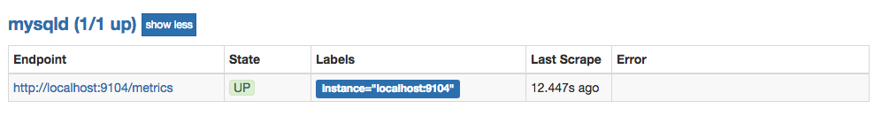

监控MySQL运行状态：MySQLD Exporter
MySQL是一个关系型数据库管理系统，由瑞典MySQL AB公司开发，目前属于Oracle旗下的产品。 MySQL是最流行的关系型数据库管理系统之一。数据库的稳定运行是保证业务可用性的关键因素之一。这一小节当中将介绍如何使用Prometheus提供的MySQLD Exporter实现对MySQL数据库性能以及资源利用率的监控和度量。
部署MySQLD Exporter
为了简化测试环境复杂度，这里使用Docker Compose定义并启动MySQL以及MySQLD Exporter：
version: '3'
services:
mysql:
image: mysql:5.7
ports:
- "3306:3306"
environment:
- MYSQL_ROOT_PASSWORD=password
- MYSQL_DATABASE=database
mysqlexporter:
image: prom/mysqld-exporter
ports:
- "9104:9104"
environment:
- DATA_SOURCE_NAME=root:password@(mysql:3306)/database
这里通过环境变量DATA_SOURCE_NAME方式定义监控目标。使用Docker Compose启动测试用的MySQL实例以及MySQLD Exporter:
$ docker-compose up -d
启动完成后，可以通过以下命令登录到MySQL容器当中，并执行MySQL相关的指令：
$ docker exec -it <mysql_container_id> mysql -uroot -ppassword
mysql>
可以通过http://localhost:9104访问MySQLD Exporter暴露的服务：
可以通过/metrics查看mysql_up指标判断当前MySQLD Exporter是否正常连接到了MySQL实例，当指标值为1时表示能够正常获取监控数据：
# HELP mysql_up Whether the MySQL server is up.
# TYPE mysql_up gauge
mysql_up 1
修改Prometheus配置文件/etc/prometheus/prometheus.yml，增加对MySQLD Exporter实例的采集任务配置:
- job_name: mysqld
static_configs:
- targets:
- localhost:9104
启动Prometheus:
prometheus --config.file=/etc/prometheus/prometheus.yml --storage.tsdb.path=/data/prometheus
通过Prometheus的状态页，可以查看当前Target的状态：

为了确保数据库的稳定运行，通常会关注一下四个与性能和资源利用率相关的指标：查询吞吐量、连接情况、缓冲池使用情况以及查询执行性能等。
监控数据库吞吐量
对于数据库而言，最重要的工作就是实现对数据的增、删、改、查。为了衡量数据库服务器当前的吞吐量变化情况。在MySQL内部通过一个名为Questions的计数器，当客户端发送一个查询语句后，其值就会+1。可以通过以下MySQL指令查询Questions等服务器状态变量的值：
mysql> SHOW GLOBAL STATUS LIKE "Questions";
+---------------+-------+
| Variable_name | Value |
+---------------+-------+
| Questions | 1326 |
+---------------+-------+
1 row in set (0.00 sec)
MySQLD Exporter中返回的样本数据中通过mysql_global_status_questions反映当前Questions计数器的大小：
# HELP mysql_global_status_questions Generic metric from SHOW GLOBAL STATUS.
# TYPE mysql_global_status_questions untyped
mysql_global_status_questions 1016
通过以下PromQL可以查看当前MySQL实例查询速率的变化情况，查询数量的突变往往暗示着可能发生了某些严重的问题，因此用于用户应该关注并且设置响应的告警规则，以及时获取该指标的变化情况：
rate(mysql_global_status_questions[2m])
一般还可以从监控读操作和写操作的执行情况进行判断。通过MySQL全局状态中的Com_select可以查询到当前服务器执行查询语句的总次数：相应的，也可以通过Com_insert、Com_update以及Com_delete的总量衡量当前服务器写操作的总次数，例如，可以通过以下指令查询当前MySQL实例insert语句的执行次数总量：
mysql> SHOW GLOBAL STATUS LIKE "Com_insert";
+---------------+-------+
| Variable_name | Value |
+---------------+-------+
| Com_insert | 0 |
+---------------+-------+
1 row in set (0.00 sec)
从MySQLD Exporter的/metrics返回的监控样本中，可以通过global_status_commands_total获取当前实例各类指令执行的次数：
# HELP mysql_global_status_commands_total Total number of executed MySQL commands.
# TYPE mysql_global_status_commands_total counter
mysql_global_status_commands_total{command="admin_commands"} 0
mysql_global_status_commands_total{command="alter_db"} 0
mysql_global_status_commands_total{command="alter_db_upgrade"} 0
mysql_global_status_commands_total{command="select"} 10
mysql_global_status_commands_total{command="insert"} 2
mysql_global_status_commands_total{command="update"} 2
mysql_global_status_commands_total{command="delete"} 1
用户可以通过以下PromQL查看当前MySQL实例写操作速率的变化情况：
sum(rate(mysql_global_status_commands_total{command=~"insert|update|delete"}[2m])) without (command)
连接情况
在MySQL中通过全局设置max_connections限制了当前服务器允许的最大客户端连接数量。一旦可用连接数被用尽，新的客户端连接都会被直接拒绝。 因此当监控MySQL运行状态时，需要时刻关注MySQL服务器的连接情况。用户可以通过以下指令查看当前MySQL服务的max_connections配置：
mysql> SHOW VARIABLES LIKE 'max_connections';
+-----------------+-------+
| Variable_name | Value |
+-----------------+-------+
| max_connections | 151 |
+-----------------+-------+
1 row in set (0.01 sec)
MySQL默认的最大链接数为151。临时调整最大连接数，可以通过以下指令进行设置：
SET GLOBAL max_connections = 200;
如果想永久化设置，则需要通过修改MySQL配置文件my.cnf，添加以下内容：
max_connections = 200
通过Global Status中的Threads_connected、Aborted_connects、Connection_errors_max_connections以及Threads_running可以查看当前MySQL实例的连接情况。
例如，通过以下指令可以直接当前MySQL实例的连接数：
mysql> SHOW GLOBAL STATUS LIKE "Threads_connected";
+-------------------+-------+
| Variable_name | Value |
+-------------------+-------+
| Threads_connected | 1 |
+-------------------+-------+
1 row in set (0.00 sec)
当所有可用连接都被占用时，如果一个客户端尝试连接至MySQL，会出现“Too many connections(连接数过多)”错误，同时Connection_errors_max_connections的值也会增加。为了防止出现此类情况，你应该监控可用连接的数量，并确保其值保持在max_connections限制以内。同时如果Aborted_connects的数量不断增加时，说明客户端尝试连接到MySQL都失败了。此时可以通过Connection_errors_max_connections以及Connection_errors_internal分析连接失败的问题原因。
下面列举了与MySQL连接相关的监控指标：
- mysql_global_variables_max_connections： 允许的最大连接数；
- mysql_global_status_threads_connected： 当前开放的连接；
- mysql_global_status_threads_running：当前开放的连接；
- mysql_global_status_aborted_connects：当前开放的连接；
- mysql_global_status_connection_errors_total{error="max_connections"}：由于超出最大连接数导致的错误；
- mysql_global_status_connection_errors_total{error="internal"}：由于系统内部导致的错误；
通过PromQL查询当前剩余的可用连接数：
mysql_global_variables_max_connections - mysql_global_status_threads_connected
使用PromQL查询当前MySQL实例连接拒绝数：
mysql_global_status_aborted_connects
监控缓冲池使用情况
MySQL默认的存储引擎InnoDB使用了一片称为缓冲池的内存区域，用于缓存数据表以及索引的数据。 当缓冲池的资源使用超出限制后，可能会导致数据库性能的下降，同时很多查询命令会直接在磁盘中执行，导致磁盘I/O不断攀升。 因此，应该关注MySQL缓冲池的资源使用情况，并且在合理的时间扩大缓冲池的大小可以优化数据库的性能。
Innodb_buffer_pool_pages_total反映了当前缓冲池中的内存页的总页数。可以通过以下指令查看：
mysql> SHOW GLOBAL STATUS LIKE "Innodb_buffer_pool_pages_total";
+--------------------------------+-------+
| Variable_name | Value |
+--------------------------------+-------+
| Innodb_buffer_pool_pages_total | 8191 |
+--------------------------------+-------+
1 row in set (0.02 sec)
MySQLD Exporter通过以下指标返回缓冲池中各类内存页的数量：
# HELP mysql_global_status_buffer_pool_pages Innodb buffer pool pages by state.
# TYPE mysql_global_status_buffer_pool_pages gauge
mysql_global_status_buffer_pool_pages{state="data"} 516
mysql_global_status_buffer_pool_pages{state="dirty"} 0
mysql_global_status_buffer_pool_pages{state="free"} 7675
mysql_global_status_buffer_pool_pages{state="misc"} 0
Innodb_buffer_pool_read_requests记录了正常从缓冲池读取数据的请求数量。可以通过以下指令查看：
mysql> SHOW GLOBAL STATUS LIKE "Innodb_buffer_pool_read_requests";
+----------------------------------+--------+
| Variable_name | Value |
+----------------------------------+--------+
| Innodb_buffer_pool_read_requests | 797023 |
+----------------------------------+--------+
1 row in set (0.00 sec)
MySQLD Exporter通过以下指标返回缓冲池中Innodb_buffer_pool_read_requests的值：
# HELP mysql_global_status_innodb_buffer_pool_read_requests Generic metric from SHOW GLOBAL STATUS.
# TYPE mysql_global_status_innodb_buffer_pool_read_requests untyped
mysql_global_status_innodb_buffer_pool_read_requests 736711
当缓冲池无法满足时，MySQL只能从磁盘中读取数据。Innodb_buffer_pool_reads即记录了从磁盘读取数据的请求数量。通常来说从内存中读取数据的速度要比从磁盘中读取快很多，因此，如果Innodb_buffer_pool_reads的值开始增加，可能意味着数据库的性能有问题。 可以通过以下只能查看Innodb_buffer_pool_reads的数量
mysql> SHOW GLOBAL STATUS LIKE "Innodb_buffer_pool_reads";
+--------------------------+-------+
| Variable_name | Value |
+--------------------------+-------+
| Innodb_buffer_pool_reads | 443 |
+--------------------------+-------+
1 row in set (0.00 sec)
在MySQLD Exporter中可以通过以下指标查看Innodb_buffer_pool_reads的数量。
# HELP mysql_global_status_innodb_buffer_pool_reads Generic metric from SHOW GLOBAL STATUS.
# TYPE mysql_global_status_innodb_buffer_pool_reads untyped
mysql_global_status_innodb_buffer_pool_reads 443
通过以上监控指标，以及实际监控的场景，我们可以利用PromQL快速建立多个监控项。
通过以下PromQL可以得到各个MySQL实例的缓冲池利用率。一般来说还需要结合Innodb_buffer_pool_reads的增长率情况来结合判断缓冲池大小是否合理：
(sum(mysql_global_status_buffer_pool_pages) by (instance) - sum(mysql_global_status_buffer_pool_pages{state="free"}) by (instance)) / sum(mysql_global_status_buffer_pool_pages) by (instance)
也可以通过以下PromQL计算2分钟内磁盘读取请求次数的增长率的变化情况：
rate(mysql_global_status_innodb_buffer_pool_reads[2m])
查询性能
MySQL还提供了一个Slow_queries的计数器，当查询的执行时间超过long_query_time的值后，计数器就会+1，其默认值为10秒，可以通过以下指令在MySQL中查询当前long_query_time的设置：
mysql> SHOW VARIABLES LIKE 'long_query_time';
+-----------------+-----------+
| Variable_name | Value |
+-----------------+-----------+
| long_query_time | 10.000000 |
+-----------------+-----------+
1 row in set (0.00 sec)
通过以下指令可以查看当前MySQL实例中Slow_queries的数量：
mysql> SHOW GLOBAL STATUS LIKE "Slow_queries";
+---------------+-------+
| Variable_name | Value |
+---------------+-------+
| Slow_queries | 0 |
+---------------+-------+
1 row in set (0.00 sec)
MySQLD Exporter返回的样本数据中，通过以下指标展示当前的Slow_queries的值：
# HELP mysql_global_status_slow_queries Generic metric from SHOW GLOBAL STATUS.
# TYPE mysql_global_status_slow_queries untyped
mysql_global_status_slow_queries 0
通过监控Slow_queries的增长率，可以反映出当前MySQL服务器的性能状态，可以通过以下PromQL查询Slow_queries的增长情况：
rate(mysql_global_status_slow_queries[2m])
在MySQL中还可以通过安装response time插件，从而支持记录查询时间区间的统计信息。启动该功能后MySQLD Exporter也会自动获取到相关数据，从而可以细化MySQL查询响应时间的分布情况。 感兴趣的读者可以自行尝试。